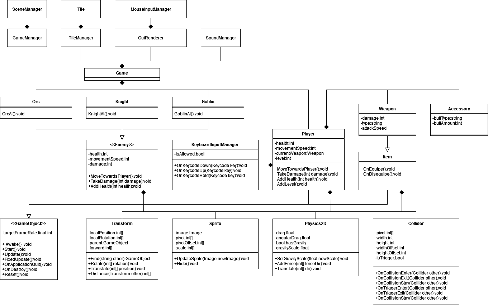

Csoport neve: Team Cherry
Feladat sorszáma: SORSZÁM
Feladat címe: 2D RPG
Analízis Modell
Gyakorlatvezető::
Árvai László
Csoport tagok:
|
Orosz Péter (Csapatvezető) |
WO02D7 |
oroszpeter97@gmail.com |
|
Dobai Attila |
DIZ4VX |
readywer136@gmail.com |
|
Drahos Alinka |
EG55OI |
drahosalinka@freemail.hu |
|
Tőzsér Zétény |
QGNLD2 |
tozserzeteny@gmail.com |
|
Gáncsos Dániel |
VS8KWD |
channeltaury@gmail.com |
2022.09.22
Történet
|
Dátum |
Verzió |
Leírás |
Szerző |
|
2022. 10. 23 |
0.1 |
Dokumentum vázlat |
Orosz Péter |
3. Az első alrendszer modellje
3.1.2 Attribútumok azonosítása
3.5 Az analízis modell osztálydiagramja.
3.6. Az analízis modell osztályainak listája.

Az enemy osztálynak tárolnia kell az életerőt, mozgási sebességét és sebzését. Pozícióját a Transform tárolja.
A player hasonló az enemyhez, de tud szintet lépni és fegyvere is van. Ezért kell a szintjét és fegyverét is tárolni.
A gameobjectnek a képernyőfrissítési sebességét kell eltárolni, hogy tudja milyen rendszerességgel kell frissíteni.
A transform a tárgyak és karakterek pozícióját tárolja és azt, hogy melyik irányba néznek.
A keyboardinputmanagernek tudnia kell, hogy mi érvényes input.
Az enemy az életerőt health néven tárolja. A sebessége movementSpeed, sebzése pedig damage.
A player a jelenlegi fegyverét currentWeapon néven tárolja, a szintjét pedig level béven.
A gameobject a frissíés gyakoriságát targetFrameRate néven tárolja.
GameObject
Enemy
Item
Egy-egy alpontban az SRS-ből átvett használati esetek szokásos működési eseteire elkészítjük a szükséges diagrammokat. A használati esetre a nevével hivatkozunk.
Ebben az alpontokban dokumentáljuk a szükséges állapotdiagramokat is. Az állapotdiagramok ábra aláírásában szerepeljen a vonatkozó osztály neve.
Ha az áttekinthetőséget javítja, az alpont további alpontokra tagolható.
Egy – egy alpontban dokumentáljuk leírással vagy a szükséges diagrammokkal a rendszerben zajló legfontosabb feldolgozási lépéseket, az egyes tevékenységek között szükséges adat áramlásokat.
Ha az áttekinthetőséget javítja, az alpont további alpontokra tagolható.
A dinamikus és funkcionális modell felhasználásával az osztálydiagramot kiegészítjük az egyes osztályokhoz tartozó operációkkal. Eközben újabb osztályok, kapcsolatok és attribútumok szükségességére is fény derülhet.
Ha szükséges, dokumentáljuk azokat a meggondolásokat és döntéseket, amelyek az osztálydiagram kialakításához vezettek.
Ha az áttekinthetőséget javítja, az alpont további alpontokra tagolható.
A dinamikus és funkcionális modell felhasználásával az osztálydiagramot kiegészítjük az egyes osztályokhoz tartozó operációkkal. Eközben újabb osztályok, kapcsolatok és attribútumok szükségességére is fény derülhet.
Az így kiegészített osztálydiagramot szúrjuk ide be. Ha olyan méretű, hogy kb. fél oldalasra méretezve nem olvasható, teljes oldalra kell méretezni és mellékletbe tenni. Itt akkor csak egy hivatkozás áll.
A diagram természetesen tartalmaz olyan kapcsolatokat is, amely egy másik alrendszer osztályához mutat. Ilyenkor a külső osztálynak is kell szerepelnie az ábrán, de a leírása nem itt, hanem az adott alrendszernél szerepel.
Egy példa az alrendszer osztálydiagramjának formájára:
1. ábra 1
A előző pontban szereplő osztálydiagram osztályainak leírása. Minden osztály leírását kiegészítjük az attribútumokkal és az operációkkal. Így egy alpont az alábbi formájú lesz:
| Típus | Név | Leírás |
| final int | targetFrame | A stabli cél FPS. |
| Metódus | Működése, Feladata |
| Awake() | Lérehozás után azonnal meghívott metódus. |
| Start() | Aktiválás után meghívott metódus. |
| Update() | Minden egyes frame-ben meghívja magát amikor csak lehet, a targetFrame -től függetlenül. |
| FixedUpdate() | A targetFrame -hez igazítva hívja meg magát. |
| OnApplicationQuit() | A program bezárása előtt még ez a metódus lefut. |
| OnDestroy() | Az objektum törélse előtt meghívott metódus. |
| Reset() | Visszaállítja a kezdeti értékekre az objektumot. |
| Típus | Név | Leírás |
| int[] | localPosition | Tömb első eleme az x, második az y. |
| int[] | localRotation | Tömb első eleme az x, második az y elforgatása a nullától. |
| GameObject | parent | Hierarchiában ki a szülője. |
| int[] | forward | A vektor amelyik irányba néz az elforgatás után. |
| Metódus | Működése, Feladata |
| Find(string other) | Egy GameObject -et keres a paraméterben megadott név alaoján. |
| Rotate(int[] rotation) | Elforgatja a localRotation -t a paraméterben megadott mennyiséggel. |
| Translate(int[] rotation) | Elmozgatja a localPosition -t a paraméterben megadott mennyiséggel. |
| Distance(Transform other) | Visszaadja a távolságot egy másik Transformtól. |
| Típus | Név | Leírás |
| float | drag | Az objektum surlódása mennyire legyen erős. |
| float | angularDrag | Az objektum légellenállása mennyire legyen erős. |
| bool | hasGravity | Az objektumnak van-e gravitációja. |
| float | gravityScale | A gravitáció hányszorosa legyen rá érvényes. |
| Metódus | Működése, Feladata |
| SetGravityScale(float newGravityScale) | A gravityScale beállítása futási idő alatt. |
| AddForce(int[] force) | Erőt fejt ki az objektumra a megadott irányba. |
| MoveTowards(int[] other) | AddForce() segítségével halad a megadott pont felé. |
| Típus | Név | Leírás |
| int[] | pivot | A collider -nek a középpontja pontja. |
| int | width | A collider széllesége. |
| int | height | A collider magassága. |
| int | widthOffset | A collider szélleségének eltolása. |
| int | heightOffset | A collider magasságának az eltolása. |
| bool | isTrigger | Ha trigger a collider akkor ütközést nem fog nézni, de azt igen hogy áthaladt-e rajta egy collider. |
| Metódus | Működése, Feladata |
| OnCollisionEnter(Collider other) | Egy másik collder-el való ütközéskor fut le. |
| OnCollisionExit(Collider other) | Egy másik collder-el való ütközés kilépésén fut le. |
| OnCollisionStay(Collider other) | Egy másik collder-el való surlódás alatt folyamatosan fut. |
| OnTriggerEnter(Collider other) | Mikor egy másik collider belép a triggerébe. |
| OnTriggerExit(Collider other) | Mikor egy másik collider kilép a triggeréből. |
| OnTriggerStay(Collider other) | Amíg egy másik collider benne van a triggerébe. |
Ide kerülhetnek a szövegközi ábrának túl nagy osztálydiagramok, és minden más, ami a dokumentumot teljesebbé teheti.